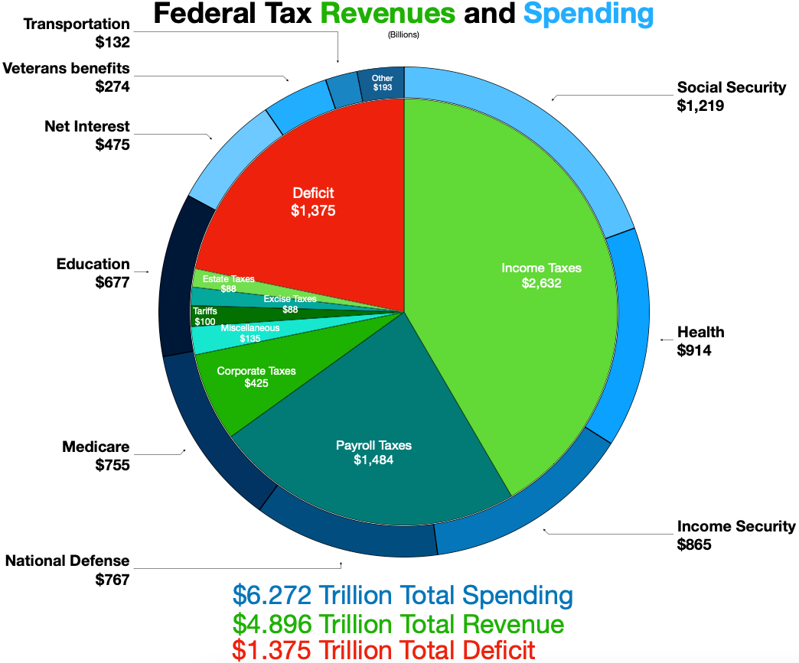
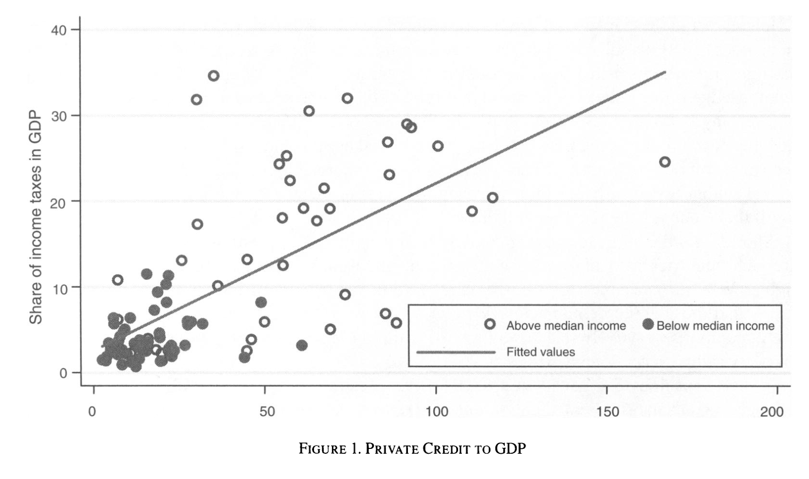
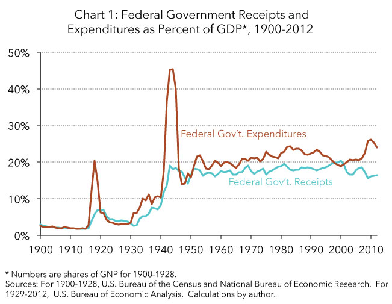

Raising revenue
PSCI 2227: War and State Development
February 16, 2026
Recap
Last couple weeks — basics of war and state development
- Tilly: war made the state and the state made war
- Abramson: contrary evidence for small states in Europe
- Thies: extension of argument to Latin America
- Dincecco and Wang: exit options and the China-Europe contrast
Now going to start drilling down into how war affects specific aspects of state development, starting with revenue
Today’s agenda
- Why revenue matters to rulers
- Revenue and the balance of bargaining power
- What determines how much rulers can extract?
- What determines how much subjects can demand in return?
- How war shifts the revenue bargain
Why does revenue matter?
Why revenue matters to rulers
Levi: “Rulers maximize revenue to the state, but not as they please.”
Why try to maximize revenue?
- Personal consumption
- Resources to attain political goals
- Resources to buy support and prevent defection
- Subjects might demand policies that cost money
Revenue in a democratic context

Roving and stationary bandits: Recap
Remember Olson’s model of state development
State of nature — anarchy
Total “self help,” no protection or authority
All production subject to theft by roving bandits
Hence little incentive to produce
Establishment of stationary bandits
Eliminate roving bandits, monopolize violence in territory
Repeated theft from same population
Don’t steal everything today \(\leadsto\) more to take tomorrow
Better for both the bandit and the victims
Revenue and bargaining
How can a stationary bandit maximize their long-run income?
- Create conditions for stable investment and growth
- Defense against external and internal threats to security
- Enforcement of contracts among citizens
- Institutional limits on appropriation by the state (e.g. eminent domain)
Eventually taxation stops looking like theft and starts to look like bargaining
Levi’s argument
State revenue is determined by the balance of bargaining power between the ruler and the tax base
- Ruler’s “price” is the amount of revenue they will extract
- Population’s “price” is the value they’ll get from the ruler — good things done for them, or bad things prevented
What is bargaining power?
- “Outside option value”
- If we don’t reach a deal, what’s my next-best option, and how much worse off does that make me?
This balance is shaped by both economic and political forces
Relative bargaining power of rulers
Sources of bargaining power — when can the ruler get away without making concessions or providing value?
- Outside sources of revenue
- Monarchy that holds lots of land
- Modern-day petrostate where government controls oil
- Corrupt government with control over foreign aid
- Highly effective coercion
- Costly defiance for subjects \(\leadsto\) more bargaining power for ruler
- “Quasi-voluntary compliance”: bargaining doesn’t imply fairness
Relative bargaining power of subjects
When can the population get value for the taxes they’re paying?
- Attractive exit options (Dincecco and Wang)
- Diverse, commercial economy — money not concentrated
- Organization for collective action
- Usually very hard to mount large-scale resistance
- But once it reaches that point, very hard to stop
Revenue and state capacity
If a state is able to extract a high percentage of GDP as revenue, what does that tell us about the state?
Two possibilities (not mutually exclusive)
- Voluntary compliance
- State offers real value for the taxes it extracts
- Population supplies the taxes for the state to achieve its aims
- Coerced compliance
- State can credibly threaten to punish those who withhold
- Population lacks means or willingness to resist
Both of these indicate different dimensions of high state capacity
Revenue and state capacity

Besley and Persson, “The Origins of State Capacity,” American Economic Review 2009
War and revenue
War is a money maker

Source: Tax Foundation
War is a money maker

War is a money maker
Tax revenue in Ukraine:

(way bigger spike if you include foreign aid, of course)
War and revenue bargaining
How does war affect relative bargaining power?
- Increased demand for protection \(\leadsto\) shifts toward ruler
- Basically impossible for private market to defend against invaders
- Clear value for the ruler to provide
- Fewer/worse exit options \(\leadsto\) shifts toward ruler
- “Rally round the flag” \(\leadsto\) shifts toward ruler
- Diminished willingness to revolt
- Militarization of society
- \(\leadsto\) favors ruler in short run
- longer run is more ambiguous!
What we’ll be looking for
How much does war raise the extractive capacity of states?
How persistent are these effects?
If rulers like revenue and war raises revenue, does that create perverse incentives?
Wrapping up
What we did today
- Importance of revenue
- Variety of uses for rulers
- Indicator of state capacity
- Revenue as bargaining between ruler and subjects
- Ruler’s power: outside revenue sources, coercive capacity
- Subjects’ power: exit options, diverse economy, collective action
- Levi’s “quasi-voluntary compliance” — bargaining doesn’t imply fairness
- How war shifts the revenue bargain
- Demand for protection, fewer exit options, rally-round-the-flag \(\leadsto\) power shifts toward ruler
To do for next time
Looking at more systematic evidence about war and state revenue
Reading: Karaman and Pamuk 2013
Other reminders:
- Tuesday, 2:00–3:30pm: My office hours
- Friday, 3:00–4:30pm: Seung Ho’s office hours
- Friday night: Project proposal due